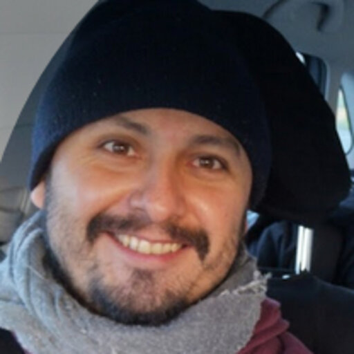

Dr. Mauricio Rodríguez-Mayorga
Theoretical and computational chemist
Laboratoire de Physique Théorique, Université de Toulouse / CNRS, France
ORCID · ResearchGate · GitHub
Latest paper
About
I am a theoretical and computational chemist at the Laboratoire de Physique Théorique in Toulouse, where I currently work under the supervision of Pierre-François Loos. I develop electronic structure methods based on reduced density matrices and many-body Green's functions, and I use them to understand electron correlation, relativistic effects and optical properties. Most of my code is open source.
Before that, I did my PhD in Girona with Miquel Solà and Eduard Matito, and worked in the groups of Sandra Luber (Zurich), Fabien Bruneval (CEA, Paris-Saclay), Lucas Visscher (VU Amsterdam, as a Marie Skłodowska-Curie fellow), Juan Carlos Sancho-García (Alicante) and Gabriele D'Avino (Institut Néel, Grenoble).
Education
-
2023
Master in Teacher Training University of Sevilla High-School, Baccalaureate, Vocational Training, and Languages
-
2018
PhD in Chemistry University of Girona Thesis: Reduced density matrices: Development and chemical applications (PDF) Supervisors: Prof. Dr. Miquel Solà and Dr. Eduard Matito
- 2013
-
2012
Degree in Chemistry University of Granada
Contact
- Email: marm3.14@gmail.com
- ORCID: 0000-0003-0869-9787
- ResearchGate
- GitHub